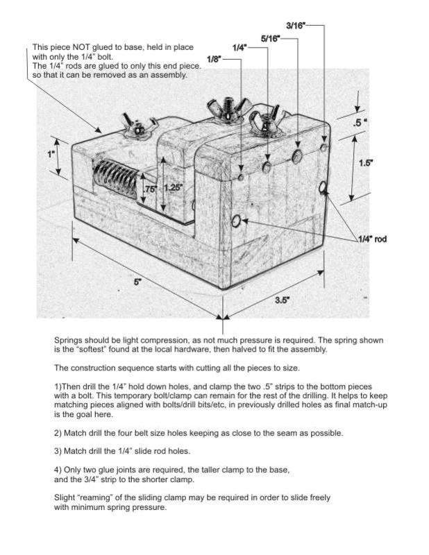
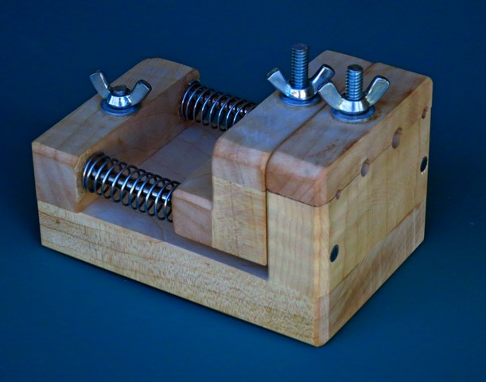
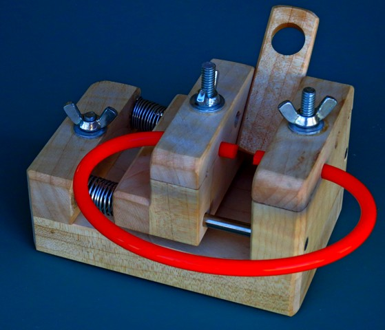
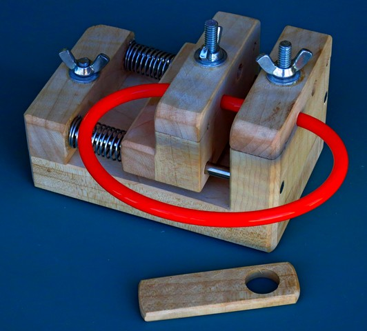
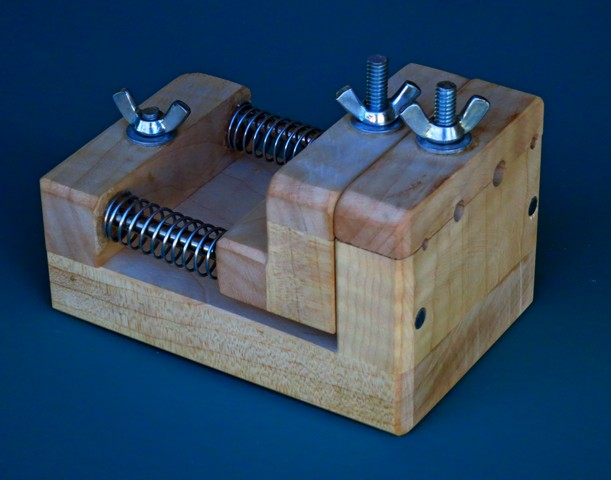
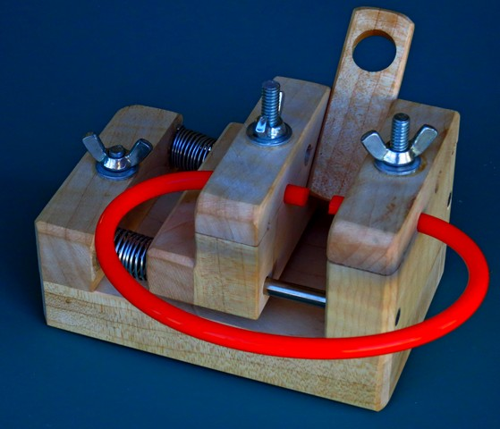
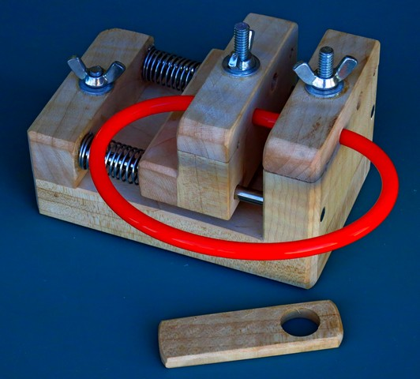

|
Cable Belt Welder
|
|

 





About this site
Disclaimer : eMail comments to me at OTBookOfKnowledge @ Gmail.com. The process of woodturning involves the use of tools, machinery and materials which could cause injury or be a health hazard unless proper precautions are taken, including the wearing of appropriate protective equipment.